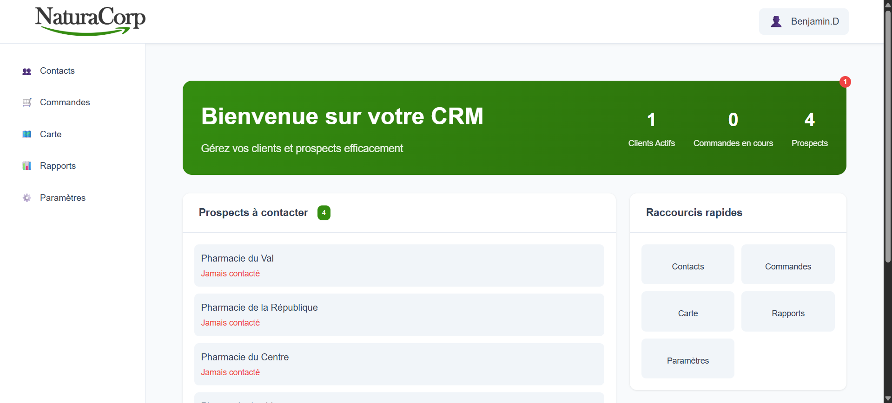

Contexte du projet
NaturaCorp est un projet visant à développer un site vitrine ainsi qu'un CRM pour
l'entreprise du
même nom. NaturaCorp est une startup fondée par Benjamin DUFOUR (ingénieur agronome) et Hannah COSTA
(consultante en communication).
L’objectif de l’entreprise est de commercialiser un complément alimentaire à base d’extrait d’un
champignon japonais.
Le site vitrine a pour but de présenter l’entreprise, ses valeurs et son produit, tandis que le CRM
est destiné à gérer la distribution auprès des clients, le suivi des commandes et l’ensemble des
activités commerciales.
Galerie du Projet

Fonctionnalités principales
- Permettre aux commerciaux de gérer les pharmacies (clients et prospects).
- Permettre aux commerciaux de gérer les commandes associées aux pharmacies.
- Afficher une carte de France interactive présentant les pharmacies (clients et prospects).
Fonctionnalités secondaires
- Permettre de rechercher et filtrer les pharmacies dans la base de données par critères avancés (nom,
région, statut, etc.).
- Implémenter un système de notifications internes pour alerter les commerciaux sur les actions
importantes (ex. : commande en retard, prospect non contacté).
- Permettre de générer des rapports personnalisés (ex. : liste des pharmacies converties sur une
période donnée).
- Permettre aux administrateurs de suivre les connexions et activités des utilisateurs du CRM (audit
trail).
- Permettre l’import et l’export de données sous forme de fichiers CSV (pharmacies, commandes).
- Proposer une interface de gestion des zones de prospection, avec possibilité d’affecter des
pharmacies à un commercial.
- Permettre d’associer des fichiers (contrats, documents réglementaires) aux pharmacies pour un suivi
administratif.
- Récupérer automatiquement les coordonnées GPS des pharmacies en utilisant une API en ligne, et les
enregistrer dans la base de données.
Technologies utilisées
- Frontend : Vue.js 3 avec Inertia.js
- Backend : Laravel 12
- Base de données : MySql
- Cartographie : Leaflet.js avec intégration OpenStreetMap
- Authentification : Laravel Breeze
Défis rencontrés
- Carte interactive : Avoir une carte interactive avec des filtres par région
- Dynamisation des pharmacies : Rendre le statut des pharmacies dynamique en fonction
des commandes
- Notifications : Mettre en place une gestion des notifications internes